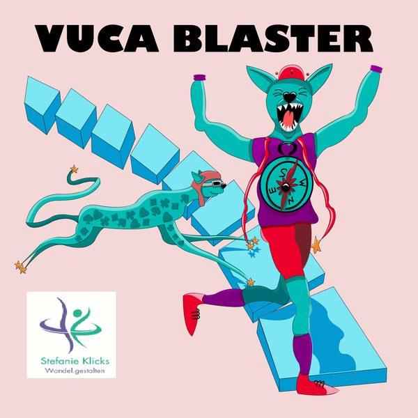

#7
Agile Coaching mit Empathie und Begeisterung vom Ich zum Wir
Wie ein agiler Coach Selbstorganisation, Teamentwicklung und ein Wir-Gefühl fördern kann.
· 49 Min.
mit Stefanie Klicks
Agile Coach
- verbindend · Hauptwert
Diese Folge hören
Dort hilft jedes Abo und jede Bewertung dem Podcast.
Worum es geht
https://klicks.it/ https://www.linkedin.com/in/stefanieklicks/
Viel Spaß beim reinhören!
Transkript lesen
Automatisch erstellt mit Spracherkennung (Whisper) aus der Audiodatei. Fremdwörter, Fachbegriffe, Namen und Zahlen werden dabei unter Umständen nicht korrekt erkannt.
0:04 Wir beginnen mit Glück auf aus dem Pott und herzlich willkommen zu einer neuen Podcast-Folge. Mein Name ist Dörte Dennis und ich freue mich riesig heute eine absolute Expertin zum Thema, wie kann ein Agile Coach Selbstorganisationen in Teams fördern, begrüßen zu dürfen. Stefanie Klicks aus Berlin ist heute mein Gast. Hallo Dörte. Hi. Stefanie, du bringst jahrelange Erfahrung als Agile Coach. in einer großen Organisation mit. Darüber hinaus bist du Spezialistin für Transformation, Mitbegründerin der Transform to Growth Youth Initiative, Netzwerkerin, Mutter von Zwillingen, so wie ich auch, Weltreisende, Brückenbauerin und nun möchtest du als selbstständige Inhaberin Organisationen und Schulen im Kulturwandel hin zu einer Lernkultur und zur Zusammenarbeit auf Augenhöhe unterstützen. Herzlich Willkommen nochmal, liebe Stefanie. Ich freue mich riesig, dass du Zeit gefunden hast, heute mit mir den Podcast aufzunehmen. Vielen Dank Dörte für die Einladung. Sehr, sehr gerne. Stefanie, ich hatte ja dich mal gefragt, magst du mal deine Erfahrungen teilen als agiler Coach? Und dann hatte ich die Idee, man könnte ja auch direkt einen Podcast draus machen, denn es werden immer mehr agile Coaches gesucht.
1:36 Und mich würde es nochmal interessieren, magst du dich nochmal, ich habe dich kurz vorgestellt, etwas näher vorstellen, vielleicht was treibt dich an und um? Ja, danke. Ich habe auch ein bisschen gestaunt, als du die ersten Worte gerade gewählt hast. Am meisten angepingt hat mich das Thema Weltreisende und Brückenbauerin. Weltreisende zum einen, weil es für mich im privaten Umfeld ganz stark mitschwingt. Da steckt für mich nämlich auch ganz viel Neugier und Offenheit. Und so bin ich. Also ich bin sehr neugierig, auch immer neue Ideen dann anzupacken und umzusetzen. Und Brückenbauerin ganz besonders im beruflichen Umfeld jetzt, weil ich super gerne Menschen verbinde, Menschen zusammenbringe. Darüber werden wir bestimmt später auch noch sprechen, zum Thema Community-Arbeit, wie das auch im besten Sinne selbstorganisiert ablaufen kann. Aber vor allem auch gerade jetzt und aktuell das Thema Brückenbauen zwischen Schule und Arbeitswelten. Denn ich glaube, dass man diese Veränderungsthemen, die da inne liegen, du hast es angesprochen, agile Begleitung, Transformationsbegleitung, dass man das eben nicht so isoliert sehen sollte, einerseits in den Arbeitswelten und andererseits in der Schule. Die Senioren dabei ganz vergessen, sondern dass wir eigentlich gemeinsame Lernwelten schaffen sollten.
2:57 Und das bringt mich gerade wieder auf das Thema Weltreise, weil das auch irgendwie damit verbunden ist. Und bevor wir jetzt in die Zukunft gucken, gucken wir nochmal in die Vergangenheit bei dir. Wie wurdest du denn Agile Coach? Also du hattest mir mal gesagt, dass das so vor circa fünf Jahren oder fünf Jahre lang warst du Agile Coach. Wie bist du denn der geworden? Also heutzutage, man sucht immer mehr Agile Coaches. Aber vor fünf Jahren, kann ich mir vorstellen, war das noch ein absolutes Novo. Genau. Also meine zurückliegende berufliche Vergangenheit ist im Personalwesen, wo ich acht Jahre einen ganz normalen personaler Job hatte, operativ-strategische Themen. Und bin dann, so gesagt, ins Geschäft gewechselt und habe dort Lean-Themen, Lean-Prozesse begleitet. Und auch das war noch sehr prozessual organisiert. Und mir fehlte immer die Komponente, okay, was passiert mit den Menschen? Weil ich ja aus der personaler Welt kam und hatte dann 2015 das erste Mal zu einer wirklich selbstorganisierten Gruppe, Community-Bezug. Und das war die Grains-Community bei Siemens, die sich selbstorganisiert, selbstlernend innerhalb unseres Konzerns gestärkt haben. Aber auch dann vieles von dem neuen Wissen, was damals vielleicht noch gar nicht unter diesem Begriff Agile Coaching lief, an andere im Konzern und auch außerhalb im Netzwerk weitergegeben haben.
4:25 Also es lief sehr viel gemeinsames Lernen und Weitergabe in der ersten Community, in der ich dann auch sehr stark involviert war. Und war das eher so durch das Netzwerk, dass du als Agile Coach dich weiterentwickelt hast? Oder wurdest du sozusagen auch von offizieller Personalseite sozusagen ernannt als Agile Coach? Also ich habe dann selbst für mich ein Scrum-Training wahrgenommen. Und über ein, zwei Jahre später, als ich quasi in diesem Bereich zum Thema Kulturwandel aktiver wurde bei mir an meinem Standort damals, hat sich die Stelle automatisch herauskristallisiert. Weil man gemerkt hat, okay, jetzt nur über Tool, Methode, Technik denken allein reicht nichts, sondern wir brauchen gerade diese Begleitung mit Empathie im Wandel in all dem, was bei uns geschieht, gerade erst recht bei uns Menschen, auch mit unserer eigenen Haltung. Da kam mehr Gewicht drauf, auch in meinem damaligen Job als Projektverantwortliche im Produktionsumfeld, wie ich damals war, dass gesehen wurde, hey, da haben wir doch eine Lücke, nämlich genau an dem Thema Haltungsarbeit, wie ich es eigentlich überschreibe, wenn es um Transformationsbegleitung geht, da viel mehr mit den Menschen im besten Sinne mitarbeiterzentriert uns zu bewegen. Und so ist es gekommen, tatsächlich sehr iterativ über Lernmomente, die ich mir selbst besucht habe, die ich aber auch durch Communities zurückerhalten habe und dann durch die klare Einsicht bei mir am Standort, hey, es ist nötig, dass wir diese Stelle gründen, die es damals noch gar nicht im Job-Katalog bei uns im Unternehmen gab.
6:06 Ja, das wäre jetzt auch meine Frage gewesen. Also für alle Interne, es gibt ja die berühmt-berüchtigten Job-Codes oder die Job-Beschreibung in einem Konzern und oftmals, ich kann mir vorstellen, vor fünf Jahren gab es in diesem schönen Excel-Katalog noch kein Agile Coach. Und wenn, gab es vielleicht einen Scrum Master, aber Agile Coach war schon sehr, ich sag mal, Vonguard und innovativ. Aber das heißt, wenn ich dich richtig verstanden habe, die Organisation hat dich schon unterstützt und hat gesagt, okay, selbst wenn es das im Job-Code-Katalog nicht gibt, sehen wir den Bedarf für diese Stelle. Und wie wurde es das dann auch sozusagen offiziell? Absolut, genau. Also mit einer Job-Beschreibung, also den Worten dahinter, die wirklich auf die aktuelle Zeit passen, wo ich heute, fünf Jahre später immer noch denke, hey, das haben wir damals richtig gut eingetütet, auch so, dass ich, ja, das Commitment dafür bekommen habe, so zu agieren zu können bei uns in der Organisation, mit viel Kreativität und Freiraum auch wirklich die Veränderungen anzuschieben. Also war das dann für dich auch nicht so ein harter Cut, so von einem Tag auf den anderen, so jetzt bin ich Agile Coach und wie mache ich das jetzt überhaupt, sondern du hattest schon das Gefühl, das ist organisch gewachsen, du hattest Rückenwind von der Organisation und konntest dich in deiner neuen Rolle auch finden und selber lernen?
7:27 Genau, es ist deswegen organisch gewachsen, weil ich schon ein bis zwei Jahre vorher zu diesem Thema Kulturwandel bei unserem Standort, ja, Initiativen gestartet habe, die vielleicht nicht unbedingt zu meinem Job gehörten, aber ich fand es wichtig, im Rahmen von Digitalisierung eben auch mit den Menschen zu denken und eben nicht zu sagen, okay, bestimmte Projektverantwortliche machen jetzt hier Digitalisierungsprojekte, sondern wie tun wir das eigentlich? Und da gab es vorher, bevor ich quasi diesen offiziellen Job dann bekommen habe, schon Initiativen, die ich sehr gerne und auch für mich vom Herzen heraus angestoßen habe. Damals gab es auch, und das ist vielleicht so auch ein wichtiger Punkt, es gab damals schon ganz viele neugierige Kollegen quasi an der Basis sozusagen. Ich war ja damals noch im Fertigungsumfeld, aber es gab eben auch das Commitment von der Leitung, das zu tun. Also beides von unten und von oben hat sich geschlossen und das ist ja auch ein Problem, was man ganz häufig heute hat, dass eine Stelle fehlt. Weil manchmal gibt es den Willen von oben, das ist dann immer noch das Beste, wenn eine Geschäftsleitung oder so sagt, hey komm, wir packen es jetzt an, wir wollen die Dinge anders machen. In den meisten Fällen gibt es ganz viel Bewegung von unten und irgendwann stockt es. Und ich hatte einfach das Glück, dass sich beides geschlossen hat und wir dann so als solches am Standort weitergegangen sind.
8:49 Das sind natürlich auch die besten Voraussetzungen, dass so eine Position oder eine Rolle auch wirklich ausgelebt werden kann. Genau. Dass du nicht nur aus der Mitte oder von unten die Veränderung begleitet hast, sondern dass du Rückenwind auch von oben hattest. Und du hattest gerade gesagt, du hattest vorher auch schon Initiativen gestartet. Waren das so klassische Graswurzelinitiativen, die du da gestartet hast? Oder waren das für dich so in der Retrospektive gar keine großen Graswurzelinitiativen, sondern eher so kleine Akzente, kleine Events und Einladungen gemeinsam zu lernen? Oder was meinst du damit? Das waren in dem Sinne Graswurzelinitiativen, die mich durch die, vielleicht können wir da auch nachher nochmal ein bisschen intensiver drüber reden, über diese Grains Community, also eine selbstorganisierte Gruppe im Konzern, die wirklich das Thema Kulturwandel angestoßen hat, dass wir uns schon in diesem Kreis, das war ungefähr 2015, schon befruchtet haben, dass wir uns Wissen weitergegeben haben, fit gemacht haben, dass wir mit Siemens-Einheiten die Sachen, hey komm, wir wollen den Weg mal anders gehen, Führung auf Augenhöhe ganz neu denken, dass wir uns da schon auf den Weg gemacht haben. Ganz häufig, hört man auch heute, lief das als U-Boot. Es hat mir so viel Energie gegeben, dass ich mich natürlich dann auch getraut habe, das in meinem eigenen Standort anzusprechen, weil du jetzt konkret fragtest, eine der ersten Initiativen waren sogenannte Marktplätze, die wir rund um das Thema Digitalisierung gestartet haben.
10:20 Nämlich, okay, wir haben Technologie-Projekte, aber mit den Menschen, also dieses Thema mit den Menschen gemeinsam zu sagen, was ist denn eigentlich da an Themen bei uns am Standort und macht mit. Das war der wichtigste Kern, der auch dann wirklich diese, ich nenne es jetzt mal weiter Graswurzelbewegung ins Schwingeln gebracht hat, weil sobald ein Standort sagt, wir haben hier Projekte und aber ihr dürft mitmachen, dann gehe ich ja sofort raus aus der Silo-Struktur. Ich gehe sofort raus aus dem Standard-Job-Beschreibung, das darfst du tun. Und wir haben in dem ersten Marktplatz dann 2017 gesagt, macht gerne mit. Und das hat natürlich erst langsam begonnen, aber es hat mehr Menschen quasi aus einer komplett anderen Abteilung zu den relevanten Themen für uns gebracht. Und auf einmal hat man Wissen, was sonst nur am Wochenende in der Garage, wenn ich irgendwie kleine Programmierungen mache für die Heimautomation, hat zurückgebracht zu uns in die Digitalisierungsprojekte. Und das ist durch solche Initiativen gestartet, wie sogenannte Marktplätze, digitale Stunden. Und ich hätte mich ohne die selbstorganisierte Community, damals Grains, heute gibt es davon noch viel mehr, nicht getraut, dies einfach bei uns zu starten. Also es ging auch wirklich unter dem Motto einfach starten und es wird bestimmt zum Besseren werden und nicht zum Schlechteren, wenn wir es mal ausprobieren.
11:46 Ja, und du bist nicht alleine, sondern da sind ganz viele andere, vielleicht nicht in deiner unmittelbaren Umgebung, aber so das Gefühl zu haben, man gehört dazu, zu einem Größeren, dass das so ein bisschen ermutigt, kann ich sehr gut nachvollziehen. Du hattest gerade noch mal eingangs erwähnt, dass das für dich der Mensch immer ein bisschen gefehlt hat, ja auch bei diesem ganzen prozessualen Denken und der Vorgehensweisen. Wie hast du das denn persönlich gemerkt, dass der Mensch in dem ganzen Konstrukt gefehlt hat? Also was war da dein Schlüsselerlebnis oder dein Aha-Moment? Also das eine ist sprachlich, dass wir in einer sehr technischen Sprache vor vielen Jahren, es hat sich jetzt geändert, aber da quasi erklärt haben, was ist das Neue, was heißt die Transformation. Also es war eine sehr technische Sprache. Das zweite war, diejenigen, die ganz am Anfang dabei waren, waren häufig die üblichen Verdächtigen, die man schon immer kannte. Vielleicht vielerorts Führungskräfte. Und auf die Organisation, damals mit 900 Mitarbeitern geblickt, gab es aber noch viel mehr, die bis dahin ganz unentdeckt waren. Und ich dachte immer, hey, wenn wir jetzt wirklich sehr viele neue Themen angehen und digitalisieren, da schlummert so viel Know-how. Ich war damals auch mitten in der Fertigung und die Menschen sind noch nicht angedockt an das Neue.
13:08 Und das war halt ganz offensichtlich gesehen. Und deswegen war das so der Augenöffner zu sagen, lasst uns doch dann mit denen. Also sehr viel Mitarbeiter zentrierter weitergehen. Und wie hast du das gesehen? Hast du das in den Gesichtern gesehen, dass die noch ein bisschen ahnungslos waren oder vielleicht auch manchmal frustriert waren, unzufrieden waren? Oder was konkret hast du bei den Menschen beobachtet? Also ich kannte den Standort schon sehr gut, weil ich vorher dort Personalverantwortliche war. Aber vor allem waren es auch, was mir spontan einfällt, die Ganggespräche. Man geht durch den Gang, sieht okay, da ist ein Poster über ein neues Thema. Aber was liegt da eigentlich inne? Und in den Gesprächen mit den Kollegen konkret war die Rückmeldung, schaut mal auf das Thema Sprache und ich bin auch noch da. Also es waren die Ganggespräche dann in dem Moment. Und dann bist du gestartet als Agile Coach mit dem Thema, okay, Selbstorganisation fördern. Klingt erstmal gut. Wie bist du denn gestartet oder mit welchem Ziel vor Augen bist du losgegangen? Also der Job war dann weniger jetzt ausgeschlackt zum Thema Selbstorganisation, sondern benannt als Kulturwandelverantwortliche. Also um zu sagen, genau die Stelle.
14:26 Wir haben sehr, sehr viele Technologen bei uns im Haus, sehr, sehr viele Experten. Aber der Punkt Begleitung des Menschen mit allem, was er umlernen kann, neu entdecken darf, was sich wieder öffnen kann, hatten wir dann überschrieben mit Kulturwandel. Und dann habe ich im Prinzip die Aktionen, die wir ein, zwei Jahre vorher schon gemacht haben, mitgenommen, mitgezogen. Das heißt, wir haben das Format Marktplätze und wirklich so, ich biete, ich suche Formate, so wie man es auch aus dem Supermarkt kennt, dass man so Karten hat. Die haben wir auch aktiv genutzt, um wirklich das Know-how aus der Organisation herauszubekommen und dann damit in den neuen Projekten, in den neuen Themen zu arbeiten. Also wir haben sehr viel auch Richtung Überblick, wer kann was, wer mag überhaupt was und dann neue Team-Setups gearbeitet. Und bis heute, ich bin ja jetzt nicht mehr in den Konzernen seit Februar, bis heute ist dieses Format Marktplatz oder auch dieses Öffnende mal über die Projekte, ich sehe wieder das Thema Brücken bauen, was du auch eingangs gesagt hast, also über die Brücke zu gehen, zur anderen Abteilung und miteinander wirklich zusammenzuarbeiten, in eine ganz andere Form der Zusammenarbeit zu kommen. Das ist, finde ich, jetzt nach den Jahren gut etabliert. Sehr schön. Da kannst du ja auch stolz auf dich sein.
15:45 Da hast du sicherlich auch einen großen Anteil gehabt. Hast du denn am Anfang so deine Rolle auch darin gesehen, ich mache das erstmal sichtbar, was schon alles da ist, die Potenziale, das Wissen, die Expertise, um dann das Wissen vielleicht auch zu teilen, zu vermehren? Oder bist du da gar nicht so, sag ich mal, zielfokussiert rangegangen und hast erstmal gedacht, ich gucke mal, wo steht der Einzelne und schaue, wie ich ihn oder sie am besten begleiten kann? Ja doch, es ging eher in Richtung sichtbar machen, was ist alles schon da, weil es gibt ganz viel Reichtum in jeder Organisation, mal weg auch von meinem früheren Arbeitgeber gesprochen, wenn man in die Firmen schaut und in die Organisation, ist da so viel Reichtum, der oft unentdeckt bleibt, weil wir ganz häufig im Alltag drin sind und gar nicht mehr im Tunnel und gar nicht mehr sehen, was hat der andere eigentlich? Und deswegen gibt es ja auch so schöne Meeting-Strukturen und Meeting-Modelle, wo man da rankommt und sagt, ich steige mal nicht sofort ins Thema rein, sondern gehe erstmal über einen Check-in. Ganz häufig haben sich schon Themen darüber entdeckt, dass ich erstmal den Menschen ankommen lasse im Meeting, sag, was bewegt dich gerade, damit du dich dann voll konzentrieren kannst und über das, was bewegt dich gerade, entdecke ich auch so viel.
17:04 Und so sind wir damals auch rangegangen und haben das dann versucht, transparent zu machen. Ich muss dazu sagen, das ist im Fertigungsumfeld extrem schwer, weil man die unterschiedlichsten Wege der Kommunikation nutzen muss und es ist immer wieder eine starke Kommunikation, die es dann braucht, die wir damals gelöst haben über Monitore in den Fertigungen, natürlich auch direkt über die Teams gegangen sind, in die Teamrunden, aber es ist ein immenser Kommunikationsaufwand, der dazu führt, überhaupt erstmal gehört zu werden mit den neuen Themen. Wir haben sehr viel auch das Thema Social Media bei uns im Konzern genutzt. Auch das geht in der Fertigung, über die Monitore sichtbar zu machen, aber es ist halt anders, wenn ein Montierer die ganze Zeit am Band steht, als wenn, wie wir, ein Bürokollege, Büromitarbeiter, da wirklich den PC immer vor der Nase hat. Also die Menschen auch da abholen, wo sie sind, in den Pokus rücken und wirklich genau hinhören, was brauchst du gerade im Moment, um vielleicht auch einen Schritt weiter zu gehen? Ganz genau. Und über diese Frage und über diesen Ansatz haben sich sehr viele neue Ideen weitergesponnen. Also es gab dann, beispielsweise, haben wir ein Format eingeführt, das ist über so einen Marktplatz entstanden.
18:28 Wir standen in einer kleinen Gruppe zusammen, haben gesagt, Mensch, wir merken, wir müssen uns, oder wir wollen uns stärker mit unserem Produkt identifizieren. Ja, wir fertigen kleine Schutzgeräte und jeder von den 900 Mitarbeitern sollte doch wissen, wo wird das Gerät eingesetzt? Wofür ist es da? Was wird eigentlich geschützt? Was ist Stromspannung? Und dann kamen wir auf die Idee, es müsste doch so einfach sein, als könnte es ein Kind erklären. Und als wir da so zusammenstanden in der Fünferrunde, haben wir dann gesagt, okay, gute Idee. Es müsste so einfach sein, als könnte es ein Kind erklären. Dann machen wir das doch und haben dann in diesem Setup noch mit fünf weiteren, also wir waren zehn Eltern und haben die Initiative unser Produkt Kinder leicht erklärt ins Leben gerufen. Da haben wir dann quasi über die Mitarbeiterkinder mit Videos, die jetzt nicht perfekt waren, die waren in Heimarbeit gedreht, quasi erklärt, was ist Differenzialschutz, was ist Motorenschutz, was ist Stromspannung, wo wirkt unser Gerät am Flughafen. Und das war eine Initiative. Deswegen sage ich es so, es ist immer so konkret entstanden über die, ich sage es jetzt wieder, Ganggespräche, die uns auch heute in der Arbeitswelt sehr stark fehlen, weil diese Ideen oder diese Innovation kommt ja genau dann zustande, wenn ich im Dialog bin und haben damit mit der Initiative Kinderleicht so im Prinzip ein Dingstar-Verschnitt geschaffen und haben bei vielen Kollegen am Standort sehr viel Identifikation geschaffen.
19:57 Wir haben erklärt, was tun wir, in kurzen Videoschnipseln, 40 Sekunden und haben dafür aber auch einen sehr empathischen, menschlichen Geist mit reingebracht. Und Kinder, die von den Mitarbeitern mitgedreht hatten, waren dann immer ganz neugierig und richtig verbunden auch mit der Arbeit ihrer Eltern. Also, es war eine meiner Lieblingsaktionen, deswegen siehst du vielleicht auch gerade mein Leuchten in den Augen. Ja, ich sehe das Leuchten, ich spüre das Leuchten und du hast auch etwas ganz, ganz Wichtiges gesagt. Also, man merkt, du bist da total begeistert in dem, wie du das alles erzählst und auch empathisch. Wäre das in deinen Augen auch eine wichtige Grundvoraussetzung als agiler Coach, diese Empathie zu entwickeln, reinzuspüren, reinzuhorchen, die Sensoren und Antennen so weit aufzustellen, dass du das auf dem Gang mitbekommst, weil du hättest ja auch dran vorbeilaufen können und sagen, die jetzt wieder, jetzt mosern die vielleicht oder so, sondern du bist dann vielleicht stehen geblieben und hast dich dazu geöffnet und gesagt, okay, was steht dahinter? Genau, also ich glaube, Empathie ist der größte Schlüssel für das alles. Man kann jetzt irgendwie ausgebildet sein oder den Titel haben, Agiler Coach, aber wenn, und das ist ja auch, was du wahrscheinlich erlebt hast, wenn Führungskräfte allein mit Empathie wirklich schauen, was braucht das Team gerade, was braucht es gerade in der Runde, in der ich bin oder eben Kollegen untereinander auch schauen, wann sage ich mal nichts, wann halte ich mich mal zurück mit der entsprechenden Empathie, dann spürt man immer, dann gelingen die Themen nach vorn.
21:33 Wenn ich mit einem Standardansatz, mit einer standardgelernten Methode reingehe, wenn ich mit so einem Berateransatz, ich habe das mal und diesen Beraterstil, ich glaube, dann machen die Menschen zu und das auch zurecht, weil ich finde, es ist immer sehr wichtig, dass die Organisation oder das Gegenüber, das Team gehört wird da, wo sie sind. Und das kriege ich eben nur hin mit der Empathie, meiner Meinung nach. Und dazu gehört auch sehr viel Haltungsarbeit bei jedem Einzelnen, bei dem, der da reingeht, nennen wir ihn mal weiter Agile Coach oder auch bei denen, die drin sind im Meeting oder bei der Führungskraft an sich. Was meinst du denn, Stefanie, kann man Empathie lernen? Also für Menschen, die vielleicht nicht so empathisch sind, können die das entwickeln, trainieren, empathischer zu sein, den Perspektivwechsel vorzunehmen? Am Anfang jetzt bei deiner Frage dachte ich, ich weiß es auch nicht, wenn ich jetzt mal so weiterdenke, wenn man sich selbst mit sich selbst auseinandersetzt. Also wirklich, es geht ja immer darum, fang bei dir selbst an, um zu sagen, ah, die anderen und da, sondern guck mal bei dir, was kannst du bei dir ändern?
22:51 Und wenn man da immer stärker hinschaut und guckt, warum triggert mich das eine oder andere, die eine oder andere Person, das haben wir, glaube ich, alle erlebt, dass man da so Triggerpunkte hat und schaut, was passiert da bei mir? Ich glaube, dann ist das schon ein Schritt, dass man da in diesen Prozess geht und mehr das Gefühl für sich bekommt und dann, glaube ich, auch das viel besser mit anderen, das Gefühl für andere bekommt, also sprich Empathie. Hast du da eine Idee zu, Dörte? Ich wollte nicht vorpreschen, aber das, was du jetzt gerade gesagt hast, hat ja auch ganz viel mit Selbstreflexion zu tun, also mal in den eigenen Spiegel schauen. Aber diese Frage, die ich dir gerade gestellt habe, habe ich schon mal jemandem gestellt, bei dem ich ein Digi-Coaching gemacht habe. Und ich auch die gleiche Frage hatte, kann man Empathie erlernen? Weil wir haben alle bestimmt schon mal Erfahrungen mit Menschen gemacht, die Welt erklären wollen und die vielleicht schon die Weisheit mit allen Löffeln zu sich genommen haben und wo man überhaupt nicht rankommt und das Gefühl hat, da prallt einfach alles ab. Der oder die ist einfach nicht zugewandt oder offen. Und dieser Coach hatte mir gesagt, ja, das kann man erlernen. Und das hat mich unfassbar erleichtert. Aber er sagte auch natürlich, umso älter du bist, umso schwieriger wird es.
24:10 Genauso wie mit, wenn ich jetzt Klavier spielen lernen möchte, brauche ich unfassbar lange. Ja, und ich sehe meinen kleinen Sohn, der sitzt da am Klavier und spielt, als wäre es das Leichteste der Welt. Also mit gehobenem Alter wird es wohl schwieriger. Also was mir dazu jetzt wieder in den Sinn kommt ist, ich glaube auch, also ich glaube auch, habe ganz, ganz viele Kollegen, die, wenn du jetzt sagst, gehobenes Alter, die mega neugierig sind und auch sehr sich einstellen können auf andere. Was mir noch so zusätzlich einfiel ist, ist, man sollte Weltenbummler sein. Und zwar Weltenbummler nicht der Weltreisen wegen, sondern der Neugier und der Offenheit wegen. Ich glaube, wenn man damit an die Dinge geht, dann kommt man automatisch dazu, hey, wo stehe ich? Was bewegt mich? So diese Selbstreflexion, wie du angesprochen hast. Ich glaube, eine Portion Neugier und Offenheit ist sehr wichtig, um da mehr zu lernen. Absolut. Und das ist auch unabhängig vom Alter. Also es gibt auch ältere Menschen, die sehr, sehr offen sind, neugierig sind und noch gerne lernen wie kleine Kinder und vielleicht auch jüngere Menschen, von denen man das dann nicht erwartet. Mich würde noch mal interessieren, das Thema Haltung. Welche Haltung empfindest du als Agile Coach als ideal oder hilfreich?
25:31 Und was wäre für dich so die Haltung, die ein Coach an den Tag legen sollte? Gibt es eine hilfreiche Haltung, die das Ganze unterstützt? Also genau. Also grundsätzlich ist es halt wertvoll, so dieses experimentelle Denken, zu sagen, okay, wir arbeiten Schritt für Schritt durch, aber wir fangen wenigstens erstmal an. Das sollte, finde ich, immer einen sehr hilfreichen Modus zu sagen, wir starten und vieles passiert dann im Laufen und im Gehen, wenn wir erstmal die ersten Schritte gehen. So hat sich das bei mir im alten Job quasi auch jedes Mal entwickelt, so wie ich es jetzt mit den Initiativen beschrieben habe, Marktplatz Kinderleicht, es kam immer wieder was dazu, bis wir dann im nächsten Schritt gemerkt haben, oh ja, wir wollen die Kompetenzen sichtbar machen, die unsere Kollegen haben, weil so können wir am besten voneinander lernen und in den Projekten unterstützen. Dieses Schritt für Schritt vorwärts gehen und dann auch mal, wie du sagst, im Sinne von Experimente starten, manches wird dann zum regulären Prozess und zwischendurch vor allem auch innehalten und gucken, was passiert hier in meinem Umfeld. Sollte ich mal abbiegen von diesem Weg. Genau, das finde ich so ganz wichtig. Und was waren für dich die größten Hürden auf dem Weg?
26:50 Und wenn du vor einer großen Hürde standst, was hat dir konkret geholfen? Also was hat dir Licht gegeben, einen Ausweg gegeben oder einen Lösungsansatz? Das, was mich in den letzten Jahren umgeben hat, waren sehr viel diese Netzwerke und die Communities, im besten Fall selbst organisiert. Also das heißt, es waren Gruppen, mit denen wir die verschiedensten Themen bewegt haben. Und weil ich habe das nicht allein gemacht, weil es wäre dann auch wieder so, okay, einer sagt, was der, also das heißt, es waren immer Gruppen beieinander, die ich dann im Prinzip gerne auch mal, wo ich gerne mal den Hut getragen habe und sagte, hey, komm, uns fehlt der nächste Schritt oder wieder zusammengeholt, weil das bei vielen, die das quasi nicht so als Job haben, dann wieder wegdriftet. Das heißt, eine der größten Hürden war Zeitrestriktionen beziehungsweise in den Themen, wo wir dann so selbstorganisiert unterwegs waren. immer wieder natürlich die Kollision mit dem Alltagsgeschäft, was jeder in seinem Job hat und dann eine Priorisierung. Und du hast dann jedes Mal gemerkt, wenn die Mitstreiter, die Mitbewegenden in den Momenten mit dem Herzen zutiefst auch vom Sinn überzeugt waren, dass das sinnvoll ist, was wir tun, dann war das Zeitlimit wieder weg.
28:07 Also es war ganz wichtig, dafür zu sorgen und zu sagen, warum tun wir das? Was eint uns im Kern? Und dann aber auch mit den Limits umzugehen drumrum, weil entweder organisational oder die Rahmenbedingungen ganz klar zu haben, was auch so sehr wichtig ist im Sinne von Selbstorganisation. Das sollte klar sein. Es ist kein rein flüssiger Prozess. Jeder kann machen, was er will, sondern es gibt ganz klare auch Spielregeln in solchen Teams. Wenn die nicht da sind, weil du nach Hürden fragst, dann wird es schwierig. Und dann entsteht auch eine große Unzufriedenheit in solchen Leuten. Aber das heißt schon, die Community oder auch andere waren für dich Inspiration, haben dir Impuls gegeben, Rückenwind gegeben. Bei denen hast du dir vielleicht auch mal Rat geholt, wenn du selber nicht weiter wusstest. Und dadurch, dass es selbstorganisiert war oder in großen Teilen selbstorganisiert war, waren viele, die mitgemacht haben, weil sie den Sinn dahinter erkannt haben, auch viel eher bereit, nochmal die extra Meile zu gehen, die extra Stunde zu investieren. Ja, ganz genau so war es in der ersten Form, die ich vorhin schon mal erwähnt hatte bei den Grains, die wirklich das Thema Kulturwandel, Arbeiten auf Augenhöhe führen, auf Augenhöhe stark propagiert haben, dass ich da so mitgelernt habe, wie du es gerade beschrieben hast.
29:29 Und später habe ich immer aus dieser Lermerfahrung versucht, die eigenen Gruppen, die dann entstehen, für alle möglichen Projekte. Wir haben dann zum Beispiel auch Siemens Bewegt Schule gegründet, auch wieder aus dem Community-Ansatz heraus. Immer wieder aus dem, was vorher, was ich gesehen habe, gelernt habe, auch wann geht mal so eine Community, wann legt sie sich mal wieder schlafen, sozusagen. Ich glaube, wenn man einmal so eine Verbindung zu den Kollegen hatte, ist sie nie ganz weg. Sie ruht dann mal an der Seite und dann sind vielleicht andere Themen wichtig, was auch völlig fein ist. Aber immer mit der Klarheit, was ist da los? Sind wir beisammen? Was fehlt uns? Fehlt für uns vielleicht nochmal die Verbindung in der Mitte? Wofür sind wir da? Mit den klaren Spielregeln. Das war im Prinzip die erste Community der Lernerfahrung, die ich dann immer wieder auch in das, was sich danach an Saatkörnern entstanden ist, weitergetragen habe. Auch aus der Lernerfahrung, was ist wichtig? Wann scheitert es nochmal? Lernerfahrung, ein super wichtiges Stichwort. Das wollte ich nämlich gerade auch fragen. Was war denn deine größte Lernerfahrung in diesem ganzen Prozess oder in diesen fünf Jahren? oder was war so dein Schlüsselmoment oder Schlüsselerlebnis, dass du sagst, wow, das bringt was, dass sich ein Mensch oder mehrere im Netzwerk dazu austauschen und dem Raum geben?
30:49 Also das Größte und Stärkste finde ich, dass wenn sich Menschen vom Herzen her zusammenfinden, sei es jetzt bei uns in der Gruppe Siemens Bewegt Schule oder Lernbar Berlin, wir wollen lernen, Freizeit leicht machen. Damals bei Grains, wenn sich Menschen im Herzen verbinden, dann entsteht da sehr viel Arbeit auf der Beziehungsebene, die wir sonst in anderen Projekten und Themen, zumindest in dem Umfeld, was ich bis dahin kannte, gar nicht so stark hatten, sondern es war ganz häufig im größten Teil die Sachebene. Das heißt, wenn wir wissen, dafür sind wir da und brennen dafür wirklich, wie du sagst, die extra Meile zu gehen vom Herzen her und verstehen das warum, dann entsteht diese Beziehungsarbeit, die wirklich nachhält. Ganz anders als in so gesetzten Teams, wenn man sagt, ich beordere dich dahin, du bist jetzt für das zuständig, also dieser Top-Down-Ansatz ist es ja eben an den Stellen nicht, dass das viel auslöst und eine sehr starke Gemeinschaft auslöst, die dann als Gemeinschaft, ganz wichtig, auch immer nicht alleine gehen, sehr viel anschieben und bewegen kann. Und damit natürlich auch wieder auf die große Organisation, die vielleicht noch traditionell arbeitet, wirkt. Genau. Und die größte, das würde ich gerne noch ergänzen, die größte Lernerfahrung dabei, es beginnt ja alles irgendwo im Kern.
32:07 Bei ein paar Menschen, die sagen, hey, wir haben eine Idee, lass uns da was tun, dann entsteht eine Community. Und was da auch eine der größten Lernerfahrungen ist, wenn das dann stark wächst, diese Community, auf 60, 80, 200 und das Wachstum zu schnell ist oder zu groß, dann verliert sich die Verbindung zum Kern, dann werden vielleicht die Gründer der Initiative unzufrieden und dann droht es zu diffundieren. Und deswegen ist ganz, ganz wichtig, dass man immer wieder auch zum Ursprung, also zum Sinn und Zweck zurückführt, zurückholt. Und was wir jetzt ganz häufig machen, ist wirklich mit einem Onboarding-Prozess in solche Gruppen zu starten. Dafür sind wir da. So arbeiten wir, weil es ist auch ganz ungewohnt, in solche Meetings dann reinzukommen. Und so eine, ganz häufig ist es eine Zack-Zack-Struktur. Also es ist nicht die Blümchen-Struktur in solchen Terminen, sondern die kann richtig effizient ablaufen, auch in den Meetings. Und das ist extrem ungewohnt für welche, die quasi jetzt nur aus einem anderen traditionellen Umfeld kommen. Und deswegen machen wir Onboardings, damit wir eben quasi Neugierigen mit den gewachsenen Strukturen in so einer Community auch gut kombinieren können. Das ist so ein Learning und so eine Hürde zu überwinden.
33:24 Ich höre da auch ganz viel Transparenz raus und Offenheit und auch immer wieder der Fokus auf den Zweck, auf die sogenannte Purpose. Simon Zinnik, den kennen sicherlich auch viele, der hat ja auch gesagt Always start with a Why. Also immer mit dem Warum anfangen und den aber auf der Reise vielleicht nie verlieren und immer wieder allen, die dabei sind, das transparent und offen vor Augen zu führen, nehme ich jetzt so aus deinen Learnings mit. Ganz genau. Und was ich dann wieder erlebt habe, wenn dieses Warum fehlt, und das kann ja auch nur ein prägnanter Satz sein. Zack, das wollen wir schaffen. Oder dafür sind wir da. Wenn das fehlt, dann auf dem Weg merkt man das irgendwann. Was tun wir hier eigentlich? Was verbindet uns? Und dann merkt man das auch im weiteren Verlauf für das, was die Gruppe baut, an Programmen, an Lernelementen, an Produkt, dass diese Verbindung fehlt. Das spürt man dann auch auf dem Weg. Und dann ist es aber auch noch nicht zu spät, dann kann man das nochmal herstellen. Sehr gut. Stefanie, Gegenwind bekommen eine ganz neue Bedeutung nach unserer kurzen Erfahrung hier. Aber mich freut es, dass wir den zweiten Teil des Podcasts aufnehmen können. Wir hatten gerade ein paar technische Schwierigkeiten. Liebe Stefanie, wir sind stehen geblieben beim Thema Rückenwind und Gegenwind.
34:45 Ich vermute, du hattest nicht nur Rückenwind, was natürlich toll wäre, aber wenn du Gegenwind hattest, wie bist du damit umgegangen? Oder wie bist du mit den Menschen umgegangen, wie, ja, was hat dir in den Momenten geholfen, weiterzumachen? Also das eine, was mir spontan dazu einfällt, ist natürlich immer die Frage, was tut ihr da? Warum macht ihr das eigentlich? Und dann, was dann geholfen hat, vor allem zu sagen, deswegen bin ich da, dafür tue, also wirklich zu einem ganz festen Stand dabei zu haben, in dem, ja, einerseits standkörperlich, aber auch in der eigenen Meinung, dass das gut ist, was ich hier tue. Also das immer wieder zu sagen, und deswegen bin ich da, also das Thema Argumentation, Kommunikation ist immens wichtig, das hatte ich auch täglich erlebt. Diese Frage, wofür eigentlich? Also das habe ich auch stark als Gegenwind erlebt. Viele von denen, die jetzt zuhören, können das sicherlich nachvollziehen, dass man immer wieder, wofür brauchen wir das eigentlich? Und diese Themen rund um Kulturwandel eigentlich die ersten sind, die wieder gehen, wenn es mal eng wird im Geschäft oder im Tagesgeschäft. Und das zweite natürlich, was wir vorhin auch schon mal angesprochen hatten, dass es immer noch ganz viel, ja, sei es jetzt Führungskräfte, aber sei es jetzt auch mal, wenn man mal auf das Schulische schaut, andere Eltern, Lehrkräfte, also in unserer Gesellschaft gibt es einfach immer noch eine sehr starke traditionelle Haltung für das, was bisher da ist, ist gut so und warum sollten wir verändern?
36:14 Das würde jetzt nicht nur in Richtung Führungskräfte geben, sondern auch über verschiedene andere Beteiligte. Das ist einfach da und die Menschen, die dann quasi gern mal Neues ausprobieren, können das jetzt, glaube ich, gut nachvollziehen. Da gibt es immer wieder und eigentlich fast täglich Gegenwind, den man dann, Dörte, weil du auch fragtest, wie damit umgehen, es heißt immer wieder Kommunikation, Kommunikation, Kommunikation und dann Schritt für Schritt mehr Mitstreiter zu gewinnen. Ich höre da ganz stark so das Thema auch Rückgrat raus, also man braucht ein starkes Rückgrat, um dem dann vielleicht auch mal Stand zu halten. Natürlich einfühlsam und wohlwollend und trotzdem offen, transparent in dem, was man tut, aber auch eine gewisse Bodenständigkeit, ein Rückgrat, der einen hält und trägt, wenn es dann vielleicht auch einmal etwas rauer wird. Genau und ein Rückgrat dazu, natürlich hat man sich selbst als eigene Person, aber ganz stark Teams, die einen umgeben oder Gleichgesinnte natürlich. Wie fängt man an? Man fängt nicht an der kniffligsten Stelle an, sondern man sucht sich erstmal Gleichgesinnte, die sich mit auf den Weg begeben. Und dazu fällt mir auch gerade ein, das Arbeiten im Tandem habe ich wirklich liebgewonnen und ich bin auch zutiefst davon überzeugt, dass es das Miteinander stärkt und dass es selbst in dieser Tandemarbeit, auch wenn ich heute mal auch, wie funktionieren Schulen und wieso ist eigentlich eine Schulleitung so alleine da an der Spitze und der Lehrer so alleine in der Klasse, bin ich zutiefst überzeugt, dass Tandemarbeit uns im Vorankommen und im Bewegen der Dinge, die uns wichtig sind, immens helfen würde und mir auch immer hilft.
38:01 Absolut. Also einen sogenannten Sparingspartner vielleicht auch mal, mit dem man auch auf Augenhöhe kontrovers sich austauschen kann und vielleicht mal einen Perspektivwechsel wagen kann und sich dann aber auch wieder gestärkter fühlt, weil man weiß, man hat es ja auch schon irgendwie mit anderen besprochen, ausgetauscht und ja, fühlt sich da auch ein bisschen mutiger, gestärkter, was Neues auszuprobieren. Habe ich das richtig interpretiert, dass du vielleicht ab einem gewissen Punkt auch dich immer mehr auf diejenigen fokussiert und konzentriert hast, die, sag ich mal, den Wandel mitgestalten wollten und die im Fokus behalten hast, anstatt, ich sag mal, diejenigen, die vielleicht mehr dagegen, kritisch gegenüberstanden dich gestellt hast, also dass du wirklich eher die mitgenommen hast, die wollten, anstatt die zu überzeugen, die noch nicht bereit waren? Also ich habe so in der, sag ich jetzt mal, Sturm und Brand Zeit, als alles so begann und wirklich so dann auch das Commitment und der Auftrag war, hey, tu was, es an allen Ecken und Enden natürlich probiert, auf jeder Ebene, auf der Mitarbeiter-Ebene, auf der Führungskraft-Ebene, da wirklich in diese Schwingung und in die Bewegung zu kommen.
39:27 Und was mir jetzt gerade so einfiel, als ich deine Frage noch gelauscht habe, war, manchmal waren es auch lose Enden. Also ganz häufig habe ich dann einfach im Gehen, was wir vorhin hatten, vieles passiert, wenn man losläuft, gemerkt, hey, manche Enden kosten sehr viel Kraft, extrem viel Kraft und an anderen Stellen ist einfach ein Team da, was möchte und habe auch für mich gelernt, die Energie so einzusetzen, dass sie dann die Dinge wirklich in die Bewegung bringt. Und das ist nun mal an den Stellen, die bereit sind und aber auch beobachtet und gelernt, dass das System sich immer mehr öffnen kann, je mehr das in Schwingung gerät. Je mehr Initiativen wir starten, die Neugier hervorrufen, die Mitmachen hervorrufen, gerät eine Schwingung in die Organisation. Und dann sind wieder mehr Menschen bereit und dann nimmt man die wieder mit. Aber ich würde jetzt nicht wirklich bei den beharrlichsten anfangen. Ich habe probiert natürlich und auch da sehr viel Frust gelassen und habe aber auch für mich gelernt, da geht dann an der Stelle so viel Energie weg, die dann leider an den festen Enden, nicht an den losen Enden, sondern an den festen Enden fehlt. Und deswegen auch für mich so meinen eigenen Erfahrungsweg auch zum Thema Gegenwind wieder an der Stelle gelernt.
40:44 Aber die Gruppe, also wenn man losgeht, ja kontinuierlich weiter und dann hat man auch die, dann spürt man auch die Erfolge auf dem Weg. Und ich nehme an, das ist auch das gewesen, was dich dann motiviert hat und getragen hat, auch wenn es dann mal vielleicht ein bisschen schwieriger war, dass du gesehen hast, hey, da ist so viel Bewegung schon drin und da ist so viel Veränderung möglich und es ist auch schon so viel positives, unentdecktes Potenzial da, was eigentlich nur darauf wartet, entdeckt zu werden, dass sich das immer einen Schritt weiter gebracht hat. Wie hast du es denn, sag ich mal, geschafft, nicht diesen Stempel, den manche vielleicht dann auch manchmal schnell abbekommen, so der Prophet im eigenen Land zu sein? Ja, die schon wieder. Die erzählt ja immer von Veränderungen und dass das alles ganz easy ist und so. Also wie hast du das geschafft, eher zu inspirieren, einzuladen und nicht so, okay, jetzt die schon wieder. Ja, rund um diese Ideen und Initiativen waren immer Gruppen von Menschen. Und was ich dann besonders schön fand, das war auch am Anfang, habe ich noch selbst geredet und dann auf dem Weg einfach dann immer die reden lassen, die auch da aktiv beteiligt sind und ganz bewusst und ganz deutlich nicht mehr selbst geredet.
42:06 Und das war dann eigentlich das Schönste, dass die Kollegen auch gemerkt haben, hey, da ist jetzt jemand anderes involviert und das ist auch noch abwechselnd und sehr unterschiedlich, von denen, die da mitmachen, dass du dann merkst, hey, da entsteht eher die breitere Basis. Das heißt, weniger in den Vordergrund gehen und mehr die mitreden lassen, die dann auch da aktiv in den Projekten unterwegs sind. Das ist so ein Gedanke, der mir bei deiner Frage gerade kommt. Wunderbar. Welche konkreten Empfehlungen, liebe Stefanie, hättest du denn noch für unsere Hörer und Hörerinnen, die sich vielleicht zum agilen Coach entwickeln wollen oder schon in der Position sind, in der Rolle? Welche konkreten Hacks, Tipps, Empfehlungen möchtest du mit uns teilen? Genau. Ich kriege häufiger mal die Frage, wie hast du das denn gemacht oder wie hast du das angegangen? Und dann ist ja immer die eine Seite, dass man im Prinzip eine Ausbildung macht, eine Weiterbildung und so weiter. Aber viel wichtiger finde ich die Seite, dass ich denen dann antworte, geh rein ins Getümmel. Also es gibt dann meistens Communitys oder Interessengemeinschaften, die so da sind, die vielleicht ein Lernformat planen, die eine nächste Aktion planen.
43:25 Und ich empfehle denen dann immer, geh rein in so eine Gruppe und lerne innerhalb dieser Gruppe mit, weil da ist halt der größte Lernerfolg. Wie organisieren die sich? Was für Spielregeln bauen sie? Welche Rollen definieren sie in so einem System? Und wie finden sie so ihren Kern? Und durch das Lernen mittendrin in so einer, ja, agileren Organisation, finde ich, nimmt man das meiste mit, nimmt auch mit, was klappt mal nicht, was klappt besonders gut und kann das dann auf die eigene Arbeit sehr gut übertragen. Also ich würde sagen, da führen verschiedene Wege nach Rom. Die wichtigste, finde ich, mitmachen innerhalb von solchen Organisationen. Und das muss nicht immer die eigene im eigenen Haus sein. Ich hatte ja dann vorletztes Jahr ganz stark angefangen, im Thema Schulwandel zu wirken und habe dann erstmal geschaut, was für Gruppen gibt es da in Deutschland. Und da ist sehr, sehr viel selbstorganisiert und ehrenamtlich und freiwillig entstanden, wo man überall mitwirken kann. Und darüber lernt es sich am besten, finde ich. Und hättest du auch noch so ein paar Leseempfehlungen? Gab es Bücher, die dich besonders inspiriert haben, Mut in dir geweckt haben, was auszuprobieren oder was wirklich learning by doing und einfach ab ins Getummel?
44:46 Also natürlich muss ich jetzt den Klassiker nennen, Reinventing Organizations von LALU. Das war so das erste Buch, was mich dazu, was überhaupt mich in diese Welt gebracht hat und so ein Augenöffner, weil da auch sehr viele Firmen und Unternehmungen beschrieben sind, wie sie es tun. Man kann da schon sehr viel rausziehen und ansonsten auch, ja, ein Klassiker in dem Umfeld, die kollegiale Führung von dem Bernd Österreich, der auch nochmal sehr viele schöne Ansätze, auch im Hinblick auf Soziokratie und einfach unterschiedliche Möglichkeiten da belichtet. Ja, das Buch kannte ich noch nicht. Das kann ich dir sehr empfehlen. Also es ist wirklich auch für die unterschiedlichsten Situationen im Team und für Teamentwicklung sehr schön dargestellt und beschrieben. Jetzt hast du ja den Schritt gewagt aus der großen Organisation heraus, hin auch zu Schulen und Organisationen und Vereinen, um da weiter das Thema Kulturwandel, Kollaboration auf Augenhöhe, Lernkultur voranzubringen und voranzutreiben. Was sind so deine Wünsche für die nächsten Jahre? Ja, also mein größter Wunsch, und das war auch so meine Einsicht, die sich durch meinen Job ergeben hat, ist, ich war ja dann sehr viel in der Erwachsenenbildung unterwegs und in dem Thema Wandel in der Wirtschaft.
46:14 Und natürlich steht das, und das sehen wir jetzt alle, das ist aber auch erst seit letztem Jahr so deutlich. Vor letztem Jahr hatte man noch viel mehr erklären müssen, warum soll sich die Schule wandeln? Warum ist es notwendig? Und jetzt durch die aktuellen Umstände ist es ja wirklich so offensichtlich für fast alle bei uns im Land. Mein größter Wunsch ist, dass wir das gemeinsam tun. Also dass wir nicht mehr sagen, hey, da sind die Schulen oder gibt es Verantwortliche und die nur. Sondern ich würde gerne in so eine Haltung kommen, dass wir sagen, wir helfen uns gegenseitig. Es gibt zum Beispiel eben Erfahrene aus der Arbeitswelt, aus der Wirtschaft. Und wir finden einen Zugang, dass wir mit diesem wertvollen Erfahrungswissen, und da gibt es noch viel mehr, die jetzt nicht nur aus dem wirtschaftlichen Umfeld kommen, um im Schulwandel mitzuwirken. Ich habe an der Stelle ganz stark das Gefühl, das ist immer noch ein geschlossenes System. Du kommst da nur rein, wenn du Lehramt studiert hast. Du wirst nur gehört, wenn du diesen Hintergrund hast. Und ich wünsche mir da sehr viel mehr Durchlässigkeit im Miteinander lernen. Und das meine ich auch mit Brückenbauer. Das ist so genau der Ansatz und die Stelle, an der ich die nächsten Jahre wirken möchte, dass die Wirtschaft einerseits von Schülern, von jüngeren Menschen, die noch sehr viel mehr Offenheit und Neugier mitbringen, als wir manchmal im Erwachsenenleben dann schon, dass wir davon sehr viel lernen können.
47:33 Und andersrum eben auch aus dem vielleicht beweglichen Umfeld, was wir jetzt schon länger haben in der Arbeitswelt. Und der Ansatz zu sagen, hey, wenn ich mir so einen Workshop im wirtschaftlichen Umfeld vorstelle, bewusst Kinder dazu zu nehmen, weil sie ganz neue, frische Ansätze haben und eine ganz andere Denke mitbringen. Und das eben nicht nur in dem Erwachsenenumfeld zu lernen, sondern die Welten zu vermischen, generationenübergreifend und dadurch Brücken zu bauen, das stelle ich mir für die nächsten Jahre vor. Wunderbar. Aber also ganz im Sinne der Diversität ist Reichtum und dass man sozusagen auch alles als Ganzes empfindet, dass alles mit allem zusammenhängt. Und da muss die Schule auch schon sozusagen anfangen. Aber nicht nur die Lehrer, sondern auch die Eltern, die Ministerien. Ja, also dass das eine gesamtgesellschaftliche Aufgabe ist und dass man nicht so, wie wir es kennen, in Silos denkt, sondern wirklich darüber hinaus und jeder so seinen Beitrag leistet. Genau. Liebe Stefanie, ich sage tausend Dank für deine Zeit. Ich hätte dir noch stundenlang zuhören können, aber wir wollen die Hörer jetzt auch nicht überfordern mit unserem Podcast. Ich denke mal nach einer Stunde.
48:54 Das war vollgepackt mit deinen Erfahrungen. Vielen, vielen Dank. Ich wünsche dir für die Zukunft alles Gute und ich bin sicher, wir werden noch ganz, ganz viel von dir hören. Und vielen Dank für deine Zeit heute. Ich danke dir, Dörte. Bis bald.
